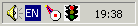

|
|
|
Сначала определимся: зачем же вообще нужны базы
данных Web-программисту? Неужели не проще писать все
самому? Ведь обычно объем данных не очень велик (если Вы
только не пишите поисковую систему). Наш личный опыт
таков: оказывается, стоит затратить какое-то время на
изучение MySQL - это удивительно мощный
инструмент, который сэкономит в будущем немало часов,
потраченных на отладку "взбесившегося" скрипта.
Итак, Вы решили установить у себя на локальном
Apache поддержку MySQL. Как ни странно,
это даже во многом проще, чем заставить работать Perl.
Прежде чем привести точные инструкции, хотелось бы
уточнить два момента:
- Эта статья не претендует ни в коей мере на то,
чтобы быть учебником по MySQL. Предполагается, что Вы
уже знаете, как работать с этой базой данных.
Максимум, что здесь описывается - это то, как
заставить MySQL работать под Window 200*/NT/XP.
- В дальнейшем будем считать, что Apache у Вас
установлен именно там, где это рекомендовалось выше.
Что ж, приступим.
- Для начала запаситесь терпением и скачайте
дистрибутив MySQL
4.0 -- Production release (recommended). Как
можно заметить, он довольно большой. Затем разверните
его в любую удобную Вам директорию.
- Запустите setup.exe.
Появится окно "Welcome". Нажмите Next.
- В следующем окне, прочтите информацию и нажмите
Next.
- Укажите папку для инсталляции, в нашем случае
укажите D:\usr\MySQL
- В окне Тип установки, выберите "Typical" и
нажмите Next
- Теперь жмите кнопку Finish и перезагрузите
компьютер.
- После перезагрузки компьютера, откройте папку
D:\usr\MySQL\bin
и запустите файл - winmysqladmin.exe.
Появиться окно "Quick Setup" введите Имя
(User name) и Пароль (Password).
после чего появится возле часов в трее
иконка, в виде светофора.
-
зелёный свет - Включено.
 -
красный свет - Выключено.
- Кликните правой кнопкой мышки по светофору и
выберите в выпадающем меню "Show me"
- Появится окно "WinMySQLadmin". Выберите
вкладку my.ini Setup и нажмите на кнопку
Create ShortCut on Start Menu, как показано на
рисунке. Измените строки, которые выделены жёлтым
цветом.
language=F:/usr/MySQL/share/russian
user=Ваш_логин
password=Ваш_Пароль

- Теперь кликните правой кнопкой в любом месте этого
окна, и в выпадающем меню выберите команду Hide
me, чтобы программа обратно свернулась в трей
возле часов.
- Считайте, что MySQL уже установлена.
Осталось только создать базу данных. Для этого следует
запустить d:/usr/mysql/bin/mysqladmin
с ключем create имя_базы. Например, если мы
хотим создать базу testbase, нужно ввести в
окне Сеанса MS-DOS:
d:
cd d:\usr\mysql\bin
mysqla~1.exe create testbase |
Поздравляем - теперь можно работать! Если хотите,
можете проверить работоспособность MySQL следующим
скриптом на PHP3 (скажем, расположенном в d:/www/test.php3):
<?
Error_Reporting(1+2+4);
define("DBName","testbase");
define("HostName","localhost");
define("UserName","root");
define("Password","");
if(!mysql_connect(HostName,UserName,Password))
{ echo "Не могу соединиться с базой ".DBName."!<br>"; exit; }
// Создаем таблицу test. Если такая таблица уже есть, сообщение об ошибке будет
// подавлено, т.к. используется "@"
@mysql(DBName,"create table test(id int,a text)");
// Вставляем в таблицу 10 записей
for($i=0; $i<10; $i++)
{ $id=time();
mysql(DBName,"insert into test(id,a) values($id,'Строка $i!')");
}
// Выводим все записи
$r=mysql(DBName,"select * from test");
for($i=0; $i<mysql_numrows($r); $i++)
{ $f=mysql_fetch_array($r);
echo "$f[id] -> $f[a]<br>\n";
}
?> |
- Обращаем Ваше внимание на макросы DBName,
HostName, UserName и Password.
- DBName должен содержать имя базы данных.
- HostName - всегда localhost, ведь мы
работаем на локальном компьютере.
- В макросе UserName проще всего подставлять
root, который является собственником всех
таблиц.
- При установке MySQL пользователю root не
назначается пароль, так что макрос Password
равен пустой строке.
|

 JavaScript
JavaScript HTML
HTML
 Apashe
Apashe Eserv
Eserv Sambar
Server
Sambar
Server Tiny Web
Tiny Web
 HtmlPad
FisherMan
HtmlPad
FisherMan 1st Page 2000
1st Page 2000 AceHTML Freeware
AceHTML Freeware Htz6xxx
Htz6xxx Оптимизатор
HTML
Оптимизатор
HTML Редакт. МЕТА тегов
Редакт. МЕТА тегов AceFTP
Freeware
AceFTP
Freeware
 TV On-line
TV On-line Радио
Радио Мультяхи
Мультяхи Мега-Поиск
Мега-Поиск

.gif)